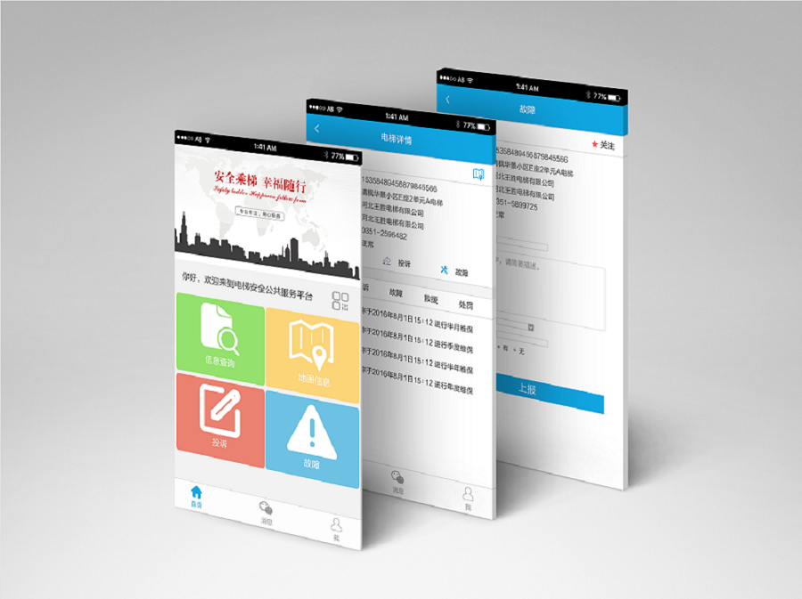
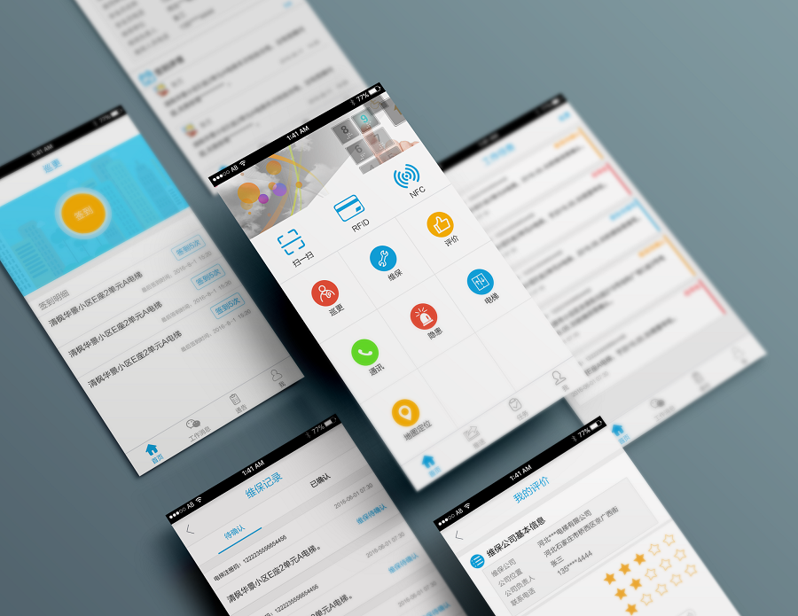
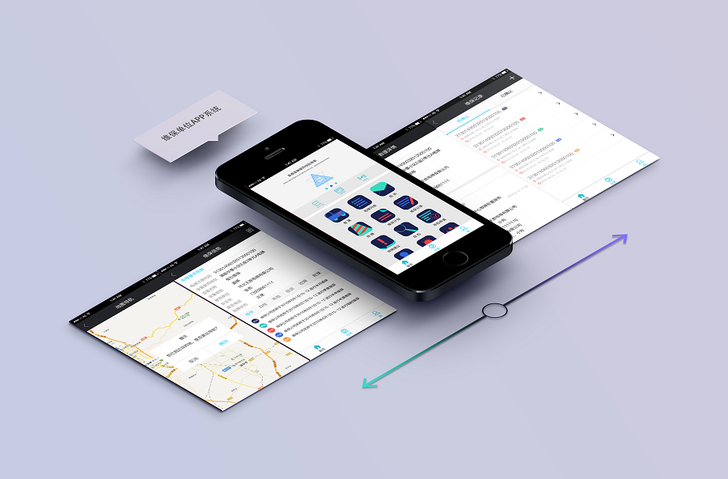
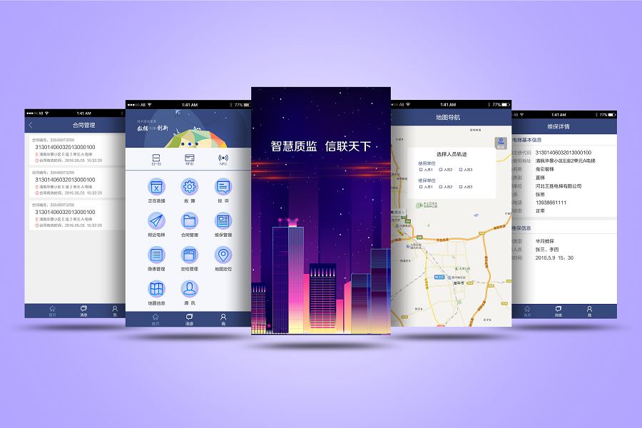
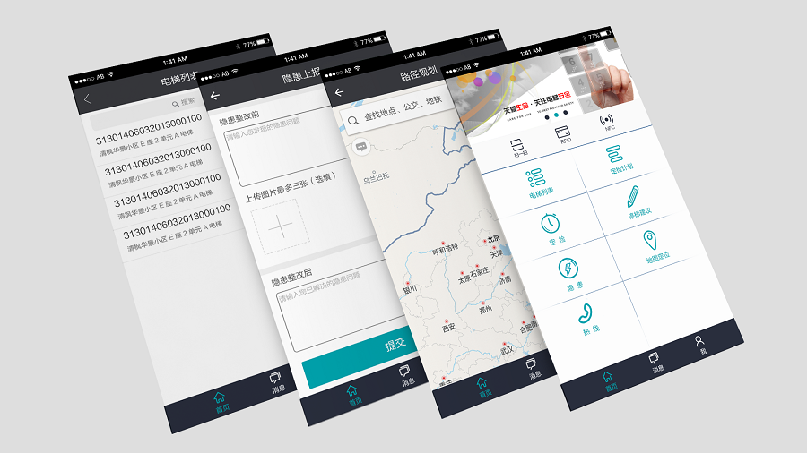

电梯安全公共服务平台APP
电梯安全公共服务平台APP是一个展示电梯安全公共服务类信息的移动端平台。社会公众通过社会公众号关注电梯，可进行电梯故障的举报、电梯异响、异味、异常等事故隐患的举报以及电梯检验、维保、标识、卫生、环境等方面的监督和投诉。
使用对象
各质监局及电梯相关人员、社会公众
运行效果
1. 信息管理一体化：软件涵盖电梯设备列表、投诉列表、故障列表、电梯定位搜索等各类信息，便于用户随时查询了解。
2. 社会大众可通过系统进行故障上报、投诉比较，查看关注电梯的运行情况，与电梯相关部门更好互动。
使用单位APP
使用单位APP系统主要为电梯使用单位人员服务，使用单位人员可实现查看负责电梯的详情、查看负责电梯的维保记录；对于待确认的维保工作可及时确认， 并可对相关维保单位的服务、工作情况进行评价；对于发现的隐患、故障可自查自纠、及时上报；可查看巡更任务，完成巡更的签到、签退。
使用对象
使用单位人员
运行效果
1. 信息管理一体化：软件涵盖电梯设备列表、维保记录列表、隐患列表、电梯定位搜索等各类信息，便于使用单位人员随时查询了解。
2. 智能签到：使用单位人员可选择NFC、射频RFID、GPS等智能方式，完成签到。
维保单位APP
维保单位APP系统用于查看电梯基本信息、维保计划。
使用对象
维保从业人员
根据计划进行电梯维保，及时解决各种电梯使用问题，必要时可录制相关音视频；
突发状况下及时响应事件，并接受具体指示，利用对话协同功能迅速解救困员；
通过系统对必要的停梯、隐患信息实时上报，把“危险彻底关在笼子里”；
根据公司安排向上汇报、平行交流、物业对接；
检验作业对接状况、辅助电梯自检、年检等工作。
运行效果
1. 信息管理一体化：软件涵盖电梯设备列表、电梯投诉信息列表、电梯故障信息列表、维保计划、维保记录、停梯建议信息列表以及自检、年检等各类信息，便于维保从业人员随时查询了解。
2. 智能签到：用户可选择NFC、射频RFID、GPS等智能方式，完成维保签到。
3. 电梯动态轨迹监控：在电子地图背景下，可生成维保从业人员的运行轨迹，以电子地图方式呈现，便于查看及监管。
4. 救援任务管理及时化：用户可通过手机APP完成救援任务的接收、受理、反馈，实现救援签到以及查看实时状况的功能。
5. 维保从业人员可通过系统进行隐患、停梯信息的上报，与电梯使用单位相关部门实现更好的互动。
6. 维保从业人员可随时查看维保计划，及时安排维保任务，快速高效的完成工作。
质监局APP
质监局APP系统用于检查电梯使用和运维相关情况。
使用对象
行业监管人员
查看电梯内部的视频监控；
查看运维人员的轨迹和实物轨迹，及时联络到运维人员和相关责任人并有效沟通；
监察隐患并检验报告情况；
电梯安全预警和应急指挥；
电梯日常抽查和专项督查。
运行效果
1. 信息管理一体化：软件涵盖电梯设备列表、电梯维保信息列表、电梯定位搜索等各类信息，便于用户随时查询了解。
2. 电梯动态轨迹监控：在电子地图背景下，可生成运维人员的运行轨迹，以电子地图方式呈现，便于查看及监管。
3. 任务管理便捷化：行业监管人员可通过手机APP完成电梯任务的接收、受理、反馈。
特检院APP
特检院APP系统主要为电梯检验单位人员服务。
使用对象
检验单位人员
可查看电梯详情；
根据定检计划安排任务，规划最佳出行路线；
检验工作组内互动，与维保、使用、监管人员互动；
报告检验情况、事故隐患和应急响应；
查看运维、应急视频及报告。
运行效果
1. 信息管理一体化：软件涵盖电梯设备列表、定检计划、隐患列表、电梯定位搜索等各类信息，便于检验单位人员随时查询了解。
2. 智能签到：检验单位人员可选择NFC、射频RFID、GPS等智能方式，完成签到。
3. 电梯动态轨迹监控：在电子地图背景下，可生成检验人员运行轨迹，以电子地图方式呈现，便于查看及监管。
4. 检验单位人员可随时查看定检计划，及时安排定检任务，快速高效的完成工作。